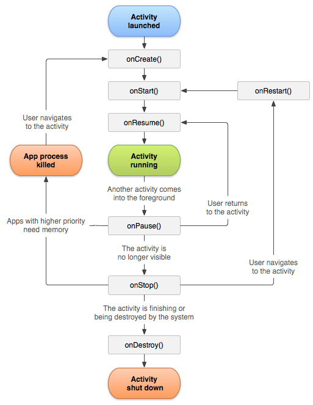
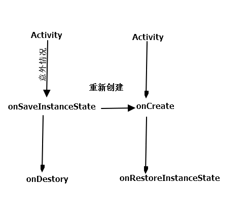

Android 的生命周期全面分析
正常情况下的生命周期分析
onCreate : 这个表示Activity正在被创建，是整个生命周期的第一个方法，在这个方法中，我们可以做一些初始化工作，比如调用setContentView去加载界面布局资源，初始化Activity所需要的数据。
onRestart : 这个表示Activity正在重新启动，一般情况下，当前Activtiy从不可见重新变为可见状态的的时候Onrestart就会被重新调用，这个一般是用户行为导致的。
onStart : 这个表示Activity正在被启动，即将开始，这个时候Activity已经可见了，但是还没有出现在前台，无法和用户交互，这个时候其实可以理解为Activity已经显示出来了，但是我们看不到
onResume 表明Activity已经可见了，并且出现在前台并且开始活动，注意这个和onStart的对比，这两个都表示Activity已经可见，但是Onstart的时候Activity还在后台，onResume之后Activity才显示到前台
onPause 表明Activity正在停止，正常情况下，紧接着onStop会被调用，特殊的，如果这个时候在快速货到当前Activity，那么onResume方法会被调用，这种属于极端情况，用户操作很难重现这一个场景，此时可以做到存储一些数据，停止一些动画的操作。onPause必须先执行完毕，新的Activity的onResume方法才会执行
onStop 表示Activity即将停止，可以做一些稍微重量级的回收工作，但是不能太耗时
onDestory 表示Activity即将被销毁，这是Activity生命周期中的最后一个回调，在这里，我们可以做一些回收工作，并最终释放资源
可以看一下下面这张图，这个是Google放出的Activity生命周期的切换过程

这里在做一些特殊的说明
针对一个特定的Activity，第一次启动，回调如下：oncreate–> onStart –> onResume
当用户打开新的Activity或者切换到桌面的时候，回调如下：
onPause->onStop还有一种特殊的情况，如果新的Activity采用透明的主题，那么当前Activity会不会调用onStop当用户再次回到原Activity时，回调如下：onRestart->onStart->onResume
当用户按back键回退时，回调如下:onPause->onStop->onDestory
当Activity被系统回收之后再次打开的时候，生命周期方法回调过程和(1)一样，注意是生命周期方法一样，不代表所有过程都一样。
从整个生命周期来讲，
onCreate和onDestory是配对的。分别表示这Activity的勾线和销毁，并且只有可能有一次调用。从Activity时候可见来讲，onStart和onStop是配对的，随着用户的操作或者设备屏幕的点亮与熄灭，这两个方法可能会被调用多次，从Activity时候在前台来说，onResume和onPause是配对的，随着用户的操作或者设备屏幕的点亮和熄灭被调用多次
onStart和onResume、onPause和onStop在描述上来讲是差不多的，但是他们描述的东西在维度上是有区别的，onStart和onStop是从Activity是否可见这个角度来描述的，而onResume和onPause是用Activity是否位于前台这个角度来描述的，在实际使用中并没有明显的区别。
如果A Activity 启动BActivity 那么是Bactivity的onResume先执行还是A的onPause先执行？这个要看一下源码，是先执行AActivity的onPause 在执行BActivity的onResume
异常情况下的生命周期方法周期分析
资源相关的系统配置发生改变导致Activity被杀死并重新创建
比较典型的一个例子是手机的横竖屏切换，但是这个时候会问为什么会在旋转屏幕的时候会杀死当前的Activity并创建新的Activity。这个是为了资源的适配。举一个例子，就拿图片来讲，我们把一张图片放在一个drawable目录，为了兼容不同的设备，会在其他目录放一些图片，eg：drawable-mdpi，drawable-hdpi，drawable-land等这样在程序启动的时候，系统会根据不同的设备加载适合的resource资源，比如横屏和竖屏的情况会拿到不同的两张图片(设定了landscape或者portrait状态下的图片)，所以在旋转屏幕的时候会销毁Activity并重新创建，来加载不同的文件。
如果我们不作特殊的处理，就会产生如下的生命周期

在Activity的onStop调用之前会先调用onSaveInstanceState方法保存当前Activity的状态，但是onSaveInstanceState和onPause的调用没有既定的时序相关，可以在onPause之后调用，也可以在onPause之前调用。在Activity创建之后，系统会调用onRestoreInstanceState将之前在onSaveInstanceState保存的Bundle传递过来，这个时候可以在onCreate和onRestoreInstanceState中判断当前Activity是否是被重建，如果被重建，Bundle参数就不为空。从时序上来讲，onRestoreInstanceState的调用时机在onStart之后
同时，我们要知道，在onSaveInstanceState和onRestoreInstanceState方法中，系统自动为我们做了一些恢复工作。当Activity在异常情况下需要重新创建是，系统会为我们保存当前Activity的数据结构，并且在Activity重启后为我们恢复这些数据，例如EditText,ListView滚动位置…。
具体保存的工作流程是这样的。Activity被意外终止的时候，Activity会调用onSaveInstanceState去保存数据，然后Activity会委托Window去保存数据，接着Window会委托他上面的顶级容器去保存数据。顶层容器是一个ViewGroup，一般来说他很有可能是DecordView，最后顶层容器在去意义通过直他的子元素来保存数据，这个时候整个数据的保存过程就完成了。其实可以发现，这是一种典型的委托思想，上曾委托下层，这种思想在Android中有很多的运用，比如View的绘制和事件的分发。可以点击TextView,查看他的onSaveInstanceState这个方法就可以知道他会保存那些数据了。
1 | public class MainActivity extends AppCompatActivity { |
onRestoreInstanceState这个方法被调用，那么他的Bundle一定不为空，但是onCreate被调用，如果要用到Bundle，那么要判断非空状态，这两个方法选择任意的都可以恢复数据，但是官方建议我们使用onRestoreInstanceState去恢复数据。onSaveInstanceState这个方法还有一点要补充的就是如果Activity是正常销毁的，就不会调用这个方法。
资源内存不足导致低优先级的Activity被杀死
这里先来讲一下Android Activity的优先级
| 状态 | 解释 | 优先级，小的优先级高 |
|---|---|---|
| 前台Activity | 正在和用户交互的Activity | 1 |
| 非前台，但是可见的Activity | 比如在Activity中弹出一个对话框，导致Activity可见，但是在后台无法和用户交互 | 2 |
| 后台Activity | 调用了onStop的 | 3 |
当系统内存不足的时候，系统会先杀死目标Activity所在的进程，并陆续调用onSaveInstanceState和onRestoreInstanceState来保存和恢复数据。如果一个进程中没有四大组件在运行，那么这个进程将很容易被杀死，因此，一些后台工作不适合脱离四大组件单独运行在后天中，这样进程很容易被杀死。最好是在Service中进行，从而保持一定的优先级，避免被系统杀死。
Android进程优先级从高到底 https://developer.android.com/guide/components/processes-and-threads.html?hl=zh-cn
前台进程
用户当前操作所必需的进程。如果一个进程满足以下任一条件，即视为前台进程：- 托管用户正在交互的 Activity（已调用 Activity 的 onResume() 方法）
- 托管某个 Service，后者绑定到用户正在交互的 Activity
- 托管正在“前台”运行的 Service（服务已调用 startForeground()）
- 托管正执行一个生命周期回调的 Service（onCreate()、onStart() 或 onDestroy()）
- 托管正执行其 onReceive() 方法的 BroadcastReceiver
通常，在任意给定时间前台进程都为数不多。只有在内存不足以支持它们同时继续运行这一万不得已的情况下，系统才会终止它们。 此时，设备往往已达到内存分页状态，因此需要终止一些前台进程来确保用户界面正常响应。
可见进程
没有任何前台组件、但仍会影响用户在屏幕上所见内容的进程。 如果一个进程满足以下任一条件，即视为可见进程：
- 托管不在前台、但仍对用户可见的 Activity（已调用其 onPause() 方法）。例如，如果前台 Activity 启动了一个对话框，允许在其后显示上一 Activity，则有可能会发生这种情况。
- 托管绑定到可见（或前台）Activity 的 Service。
可见进程被视为是极其重要的进程，除非为了维持所有前台进程同时运行而必须终止，否则系统不会终止这些进程。
服务进程
正在运行已使用 startService() 方法启动的服务且不属于上述两个更高类别进程的进程。尽管服务进程与用户所见内容没有直接关联，但是它们通常在执行一些用户关心的操作（例如，在后台播放音乐或从网络下载数据）。因此，除非内存不足以维持所有前台进程和可见进程同时运行，否则系统会让服务进程保持运行状态。后台进程
包含目前对用户不可见的 Activity 的进程（已调用 Activity 的 onStop() 方法）。这些进程对用户体验没有直接影响，系统可能随时终止它们，以回收内存供前台进程、可见进程或服务进程使用。 通常会有很多后台进程在运行，因此它们会保存在 LRU （最近最少使用）列表中，以确保包含用户最近查看的 Activity 的进程最后一个被终止。如果某个 Activity 正确实现了生命周期方法，并保存了其当前状态，则终止其进程不会对用户体验产生明显影响，因为当用户导航回该 Activity 时，Activity 会恢复其所有可见状态。 有关保存和恢复状态的信息，空进程
不含任何活动应用组件的进程。保留这种进程的的唯一目的是用作缓存，以缩短下次在其中运行组件所需的启动时间。 为使总体系统资源在进程缓存和底层内核缓存之间保持平衡，系统往往会终止这些进程。
从服务进程开始，一般是不会被系统杀死的，但是这个还要看国内各种不同Rom的优化了。
如果重新创建Activity，就在清单文件中为activity添加android：configChanges="orientaion"
Activity的启动模式
Activity的LaunchMode
- standard
标准模式，这个是系统的默认模式。在这种模式下，Activity A启动了Activity B ，那么B就会进入到A的Activity。如果是使用ApplicationContext去启动standard模式的Activitty就会报错。这个是应为standard模式的activity默认会进入启动它的activity所属的任务栈，但是由于非Activity类型的Context并没有任务栈，所以就有问题了，这个是有就需要在启动的时候之指定FLAG_ACTIVITY_NEW_TASK标记位，这样启动的时候就会为他创建一个新的任务栈。这个时候启动的Activity实际上是一个singleTask模式启动的。 - singleTop
栈顶复用模式。类似standard模式，但是区别是如果这个activity在栈顶，就不会创建。但是会回调他的onNewItent方法 - singleTask
栈内复用模式。这是一种单实例模式，在这种模式下，只要Activity在一个栈中存在，那么多次启动此Activity都不会重新创建实例，和singleTop一样，会回调onNewItent方法。具体的，当启动一个具有singleTask模式的Activity，比如Activity A，这个时候系统会寻找时候存在A想要的任务栈，如果不存在，就重新创建一个任务栈，然后创建A并把A实例放入栈中。如果存在A所需要的任务栈，那么久这是要看任务栈中有没有实例A，如果有，就把A调到栈顶，并调用onNewIntent方法，如果不存在，就创建并把A压入栈中。
举个例子
比如任务栈S1目前的情况是ABC，这个时候Activity D用singleTask模式请求启动。
第一种情况。 其所需要的任务栈是S2.由于S2和D实例均不存在，这个时候会创建任务栈S2，并创建D将D压入S2
第二种情况，假设D所需要的任务栈是S1，那么S1已经存在，就会直接创建D并压入S1
第三种情况，如果D所需要的任务栈是S1，并且当前任务栈S1的情况为ADBC，那么根据栈内复用原则，就不会创建D，而是把D切换到栈顶，调用其onNewIntent方法，同时由于singleTask默认具有clearTop效果，会导致D上面的Activity全部出栈，最终S1中的情况是AD - singleInstance
单实例模式。这个是对singleTask的加强版，除了具有singleTask所有的属性外，还加强了一点，那就是具有这种模式的Activity只能单独的存在一个任务栈中，换句话说，如果Activity A 具有singleInstance模式，当A启动后，系统会为他创建一个新的Activity任务栈，然后这个A单独存在这个任务栈，由于栈内复用的特性，后续君不悔创建新的activity，除非这个独特的任务栈被系统销毁了。
上面介绍了几种启动模式，这里需要指出的一种情况，假设我们目前有两个任务栈，前台任务栈的情况是AB，后台任务栈的情况是CD，假设CD的启动模式均为singleTask。现在启动D，那么整个后台任务栈就会被切换到前台，这个时候后退列表就变成了ABCD，当用户按back的时候，ABCD会一一出栈。这个时候如果启动的是C，就不一样了，C是singleTask的，会把D出栈，这个时候就只剩下ABC了。
这里有一个概念就是Activity任务栈，这个是什么呢?这个就要从一个参数说起TaskAffinity可以翻译成亲和度，这个参数标记了Activity任务栈的任务栈名。默认情况下所有的Activity所需要的任务栈的名字就是应用的包名。当然，我们可以为美特Activity都单独指定TaskAffinity，这个属性一定不能喝包名相同，否则就相当于没有指定。TaskAffinity属性主要和singleTask启动模式或者allowTaskReparenting属性配对使用，在其他情况下没有意义。另外，任务栈分为浅谈任务和后台任务栈，后台任务栈中的Activity位于暂停状态，用户可以通过切换将后台任务栈再次调到前台。当TaskAffinity和singleTask启动模式配对使用的时候，他是具有改模式的Activity的目前任务栈的名字，待启动的Activity会运行在名字和TaskAffinity相同的任务栈中。当TaskAffinity和allowTaskReparenting结合的时候，这种情况比较复杂，会产生特殊的效果，当一个应用A启动了应用B中的某个Activity，如果这个Activity的allowTaskReparenting属性值为true，那么应用B被启动之后，这个Activity会直接从应用A的任务栈转移到应用B的任务栈，这个还是比较抽象，举个例子：如果现在有两个应用A和B，A启动了B的一个Activity C，然后按Home回到桌面，在点击B进入，这个时候启动的不是B的住Activity，而是会进入到被A启动的Activity，或者说C从A的任务栈转移到了B的任务栈。可以这么理解，由于A启动了C这个时候C只能运行在A的任务栈中，但是C属于B的应用，正常情况下他的TaskAffinity一定和A的任务栈不相同，因为包名不同，所以。当B被启动之后B创建自己的任务栈，这个时候系统发现C原本所想要的任务栈已经被创建了。所以就把C从A的任务栈中移动到B的任务栈中。
如何给Activity指定启动模式呢?有两种方法。
第一种是通过清单文件指定Activity启动模式1
2
3
4
5
6
7
8
9
10
11
12
13
14
15
16
17
18
19
20
21<?xml version="1.0" encoding="utf-8"?>
<manifest xmlns:android="http://schemas.android.com/apk/res/android"
package="com.smart.kaifa">
<application
android:allowBackup="true"
android:icon="@mipmap/ic_launcher"
android:label="@string/app_name"
android:roundIcon="@mipmap/ic_launcher_round"
android:supportsRtl="true"
android:theme="@style/AppTheme">
<activity android:name=".MainActivity" android:launchMode="singleTask">//在这里为Activity设置启动模式
<intent-filter>
<action android:name="android.intent.action.MAIN" />
<category android:name="android.intent.category.LAUNCHER" />
</intent-filter>
</activity>
</application>
</manifest>
另外一种是通过在Intent中设置标志位来为Activity指定启动模式
1 | Intent intent=new Intent(); |
这两种方式都可以为Activity指定启动模式，但是两者还是有区别的，首先第二种的优先级要高于第一种，当两种同时存在的时候以第二种方式为准，其次上述两种启动方式的限定范围上有所不同，比如，第一种方式无法直接为Activity设置Flag_ACTIVITY_CLEAR_TOP标识，而第二种方式无法为Activity指定singleInstance模式。
1 | public class MainActivity extends AppCompatActivity { |
点击四次
然后使用adb shell dumpsys activity activitys命令查看
1 | ACTIVITY MANAGER ACTIVITIES (dumpsys activity activities) |
这个时候去掉singleTask，我们点击3下，之后看一下结果
1 |
|
看一下 Running activities (most recent first): 这个后面跟着的东西
这里表明，现在有3个任务栈，一个任务栈的taskAffinity是com.smart.kaifa，一个任务栈的taskAffinity是com.android.systemui，另外一个任务栈的taskAffinity是com.google.android.googlequicksearchbox，这里可以看到com.smart.kaifa中有3个MainActivity，这里就印证了上面的内容
还有一个singleTask要说的
这里创建3个Activity：A、B、C分别对应MainActivity，SecondActivity，ThirdActivity
看一下清单文件的配置：1
2
3
4
5
6
7
8
9
10
11
12
13
14
15
16
17
18
19
20
21
22
23
24
25
26
27
28
29
30
31
32
33<?xml version="1.0" encoding="utf-8"?>
<manifest xmlns:android="http://schemas.android.com/apk/res/android"
package="com.smart.kaifa">
<application
android:allowBackup="true"
android:icon="@mipmap/ic_launcher"
android:label="@string/app_name"
android:roundIcon="@mipmap/ic_launcher_round"
android:supportsRtl="true"
android:theme="@style/AppTheme">
<activity android:name=".MainActivity">
<intent-filter>
<action android:name="android.intent.action.MAIN" />
<category android:name="android.intent.category.LAUNCHER" />
</intent-filter>
</activity>
<activity
android:taskAffinity="com.xiao.x"
android:name=".SecondActivity"
android:label="@string/title_activity_second"
android:launchMode="singleTask"
android:theme="@style/AppTheme.NoActionBar" />
<activity
android:name=".ThirdActivity"
android:taskAffinity="com.xiao.x"
android:launchMode="singleTask"
android:label="@string/title_activity_third"
android:theme="@style/AppTheme.NoActionBar"></activity>
</application>
</manifest>
这里将SecondActivity和ThirdActivity设置为singleTask，并且taskAffinity设置为com.xiao.x，假定MainActivity为A，SecondActivity为B，ThirdActivity为C，然后A启动B，B启动C，C启动B。
先分析一下。
A是Standard模式。所以A启动B的时候，由于B是singleTask并且taskAffinity是com.xiao.x，这个时候com.xiao.x任务栈不存在，就会创建这个任务栈，然后B启动C，C的taskAffinity是com.xiao.x，已经存在，只需要创建一个C放入com.xiao.x这个任务栈中
看一下 dumpsys activity的结果
1 | Stack #1: |
现在对Activity的启动模式有了更加深入的了解
Activity的Flags
这里主要分析一些比较常用的标志位
- FLAG_ACTIVITY_NEW_TASK
这个标记为的作用是为Activity指定singleTask启动模式，其效果和在XML中指定该启动模式相同 - FLAG_ACTIVITY_SINGLE_TOP
这个标记位的作用是为activity指定SingleTop启动模式，其效果和在XML中指定该启动模式相同 - FLAG_ACTIVITY_CLEAR_TOP
具有此标记位的Activity，当他在启动的时候，同一个任务栈中所有位于它上面的Activity都要出栈，这个标记位一般会和singleTask启动模式一起出现，在这种情况下，如果Activity实例已经存在，会调用OnNewIntent，如果被启动的Activity是采用standard模式，那么连同他上面的Activity都要出栈，singleTask默认自带FLAG_ACTIVITY_CLEAR_TOP效果 - FLAG_ACTIVITY_EXCLUDE_FROM_DECENTS
具有这个标记的Activity不会出现在历史Activity列表中，当某些情况下我们不希望用户通过历史列表回到我们的Activity的时候这个标记比较有用，他等同于在XML中指定Activity的属性android:excludeFromRecents=true
Intent的匹配规则
Activity的启动分为两种，显示调用和隐式调用。隐式调用最主要是通过IntentFilter中设置过滤信息，只有匹配过滤信息才能启动Activity
1 |
|
为了匹配过滤列表，需要同时匹配过滤列表中的action,category,data信息，否则匹配失败，一个过滤列表中的action，category和data可以有多个，所有的action，category，data分别构成不同的类别，同一个类别的信息共同约束当前类别的匹配过程，只有一个Intent同时匹配action类别，category类别，data类别才算完全匹配，只有完全匹配成功才能成功启动目标Activity。另外一点，一个Activity中可以有多个intent-filter，一个intent只要能匹配任何一组intent-filter即可成功启动对应的Activity。
规则匹配详情
action的匹配规则
action是一个字符串，系统预定义了一些action，同时我们也可以在应用中自定义action，action的匹配规则就是Intent中的aciton必须能够和过滤规则中的action匹配，这里的匹配指的是action的字符串值完全一样。一个过滤规则中可以有多个action，那么只要Intent中的action中能够与过滤规则中任何一个action相同，即可匹配成功。针对上面的过滤规则，只要我们的Intent中的action为com.xxx或者为com.xiao就可以匹配成功。需要注意的是如果Intent中没有指定action，那么匹配失败。总结一下就是action的匹配要求Intent中的action存在且必须和过滤规则中的其中一个action相同，这里需要注意他和category匹配过着的不同，另外，action区分大小写category匹配规则
category是一个字符串，系统已经预定义了一些category，同时我们也可以在应用中自动自category。category的匹配规则和action不同，他要求Intent中如果含有category，那么所有的category都必须和过滤规则中的其中一个category相同。换句话说，Intent中如果出现了category，不管有几个category，对于每个category来讲，它必须是过滤规则中已经定义了的category。当然，Intent中可以没有category，如果没有category的话，按照上面的描述。这个Intent任然可以匹配成功。注意他和action的区别，action是只要有一个满足就可以，而category必须是都要满足。那么为什么不设置category也可以匹配成功呢？原因是系统在startActivity的时候或者startActivityForResult的时候会默认为加上Intent加上”android.intent.category.DEFAULT”这个category，所以这个category就可以匹配前面的过滤规则中的第一个。同时为了我们隐式调用，要在intent-filter中添加一个category。data的匹配规则
data的匹配规则和action类似，如果过滤规则中定义了data，那么Intent中必须也要定义可匹配的data。在介绍匹配规则之前，县来讲一下data的结构，这个有点复杂
1 | <activity |
data由两部分组成，mimeType和URI。mimeType指媒体类型，比如image/jpeg audio/mpeg4-generic和video/* 等，可以表示图片，文本，视频等不同的媒体格式，而URI中包含的数据就比较多了，下面是URI的结构
1 | <scheme>://<host>:<port>/[<path>|<pathPrefix>|<pathPattern>] |
这里在结合一个例子
1 | content://com.example.project:200/folder/subfoder/etc |
这个其实就是一个类似网址的结果
| 英文 | 解释 |
|---|---|
| scheme | URI的模式，比如Http、file、content等,如果RUI中没有指定scheme，那么整个URI的其他参数无效，这意味着整个URI无效 |
| Host | URI的主机名，比如www.baidu.com,如果host未指定,那么整个URI中的其他参数无效，这也意味着URI是无效的 |
| Port | URI的端口号，比如80，仅当URI中指定了scheme和host参数的时候，post参数才是有意义的 |
| path | 是描述路径信息的。表示完整路径信息 |
| pathPrefix | 表示完整路径信息，但是他里面可以包含通配符 ，表示0个或者多个任意字符，需要注意的是，由于正则表达式的规范，如果想表示真是的字符串，要写成\* |
| pathPattern | 表示路径的前缀信息 |
介绍完之后就介绍data的匹配规则了，data匹配规则和action类似，它也要求必须含有data数据，并且data数据能够完全匹配过滤规则中的某一个data，这这里的完全匹配指的是过滤规则中出现的data部分也出现了Intent中的Data中
1 |
|
这种匹配规则制定了媒体类型为所有类型的文字，mimeType属性必须为”text/* “才能匹配，这种情况下虽然规律规则没有指定URI，但是却有默认值，URI的默认值为content和file。也就是说，虽然没有指定URI，但是Intent中URI部分的scheme必须为content或者file才能匹配，这点是需要尤其注意的。为了匹配这个规则，我们可以写出如下示例。
1 | intent.setDataAndType（URI.parse("file://abc")，“text/xxx”） |
如果要为Intent指定完整的data,必须要调用setDataAndType方法，不能先调用setData在调用setType,因为这两个方法彼此会清除对方的值，这个看源码就很容易理解了。
1 | public Intent setData(URI data){ |
设置过滤规则：
1 |
|
这种规则制定了两组data规则，切每个data都制定了完整的属性值，既有URI又有mimeType。为了匹配2中的规则，我们可以写出如下示例
1 | intent.setDataAndType（URI.parse("file://abc")，“audio/mpeg”） |
或者1
intent.setDataAndType（URI.parse("file://abc")，“video/mpeg”）
通过上面的两个示例，读者应该已经明白了data的匹配规则，关于data还有一个特殊情况需要说明一下，这也是它和action不同的地方，如下两种特殊写法，它们的作用是一样的
1 | <data |
1 | <data |
到这里我们已经把IntentFilter的过滤规则都讲解一遍，还记得本节前面给出的一个intent-filter的示例吗，现在我们给出完全匹配他的Intent
1 | Intent intent=new Intent("com.xiao.x") |
这个匹配规则对于Service和BroadcastReceiver是一样的
但是对于Service 系统建议使用显示的方式来启动服务
当我们使用隐式方式启动Activity的时候建议做一下判断，看能不能匹配我们的隐式Intent，如果没有就可能会报错 activity no found 。判断有两种方式，第一种是使用packetManager的resolveActivity方法或者Intent的resolveActivity方法，如果找不到Activity，就会返回null。packetManage还提供了另外一种方法，queryIntentActivities 方法，这个方法和resolveActivity不同，他返回所有匹配的activity，这个时候可以通过他过滤activity，然后直接实现应用内跳转。
1 | public abstrace List<resolveInfo> queryIntentActivitys(Intent intent,int flags); |
第一个参数是intent，第二个参数要注意，我们要使用MATCH_DEFAULT_ONLY这个标记位，这个标记位的含义是紧紧匹配那些在intent-filter中申明的<category android:name="android.intent.category.DEFAULT"> 这个category的activity。使用这个标记位的意义是如果两个方法返回值不为null，那么startactivity一定可以成功，如果不使用这个标记位，那么就可以吧intent-filter中category不含DEFAULT的那些匹配出来。从而导致匹配失败，那么category为DEFSULT的那些就无法匹配出来，导致启动失败。因为不还有DEFAULT的这个category的activity无法接受隐式的intent。在action和category中有一类action和category比较重要
1 | <action android:name="android.intent.action.MAIN"> |
这个标记了应用的一个入口，二缺一不可，不然无法启动。针对Service和BroadcastReceiver，PackageManager同样提供了类似的方法获取成功匹配的组件的信息